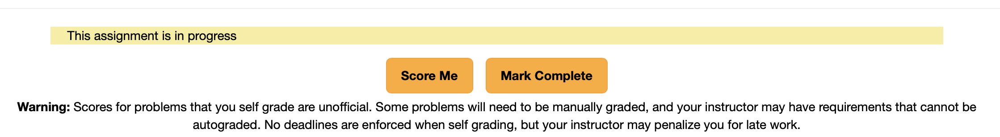
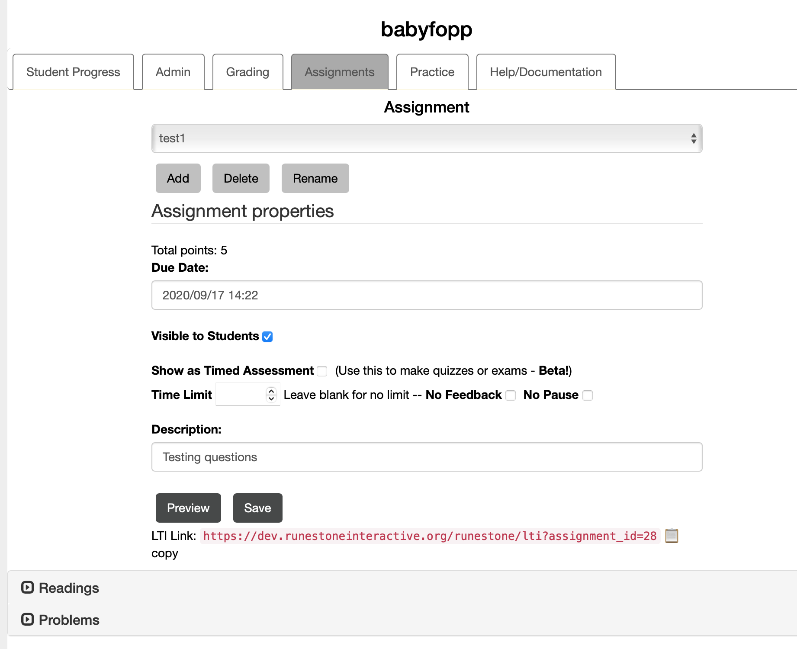
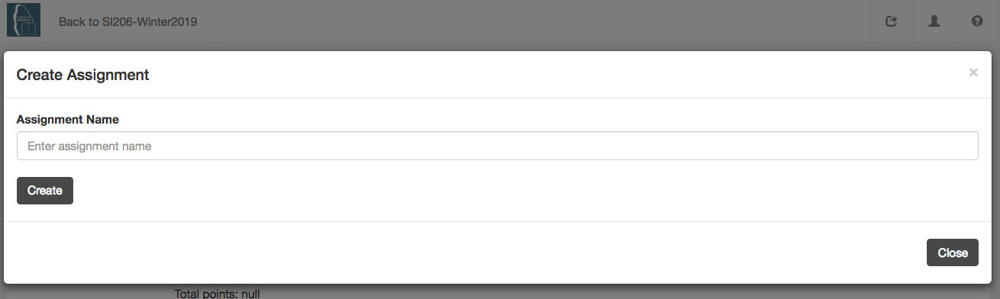
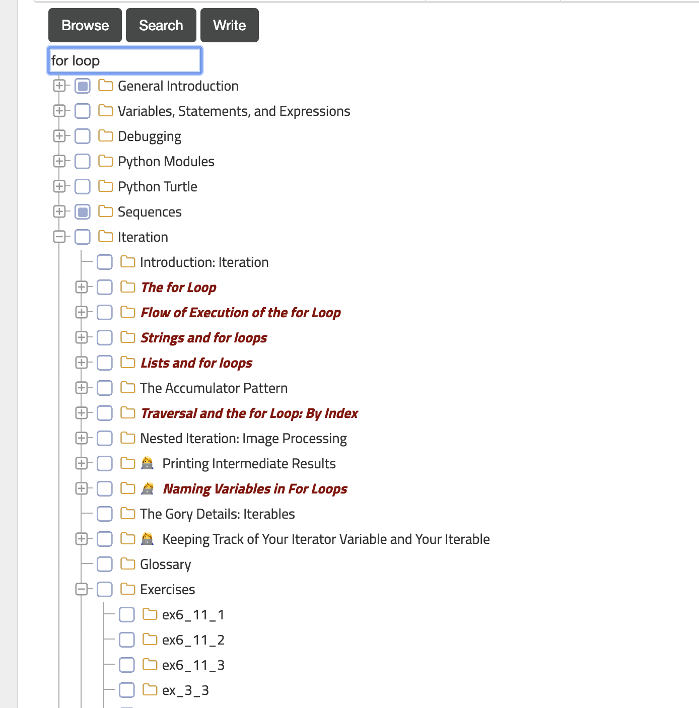
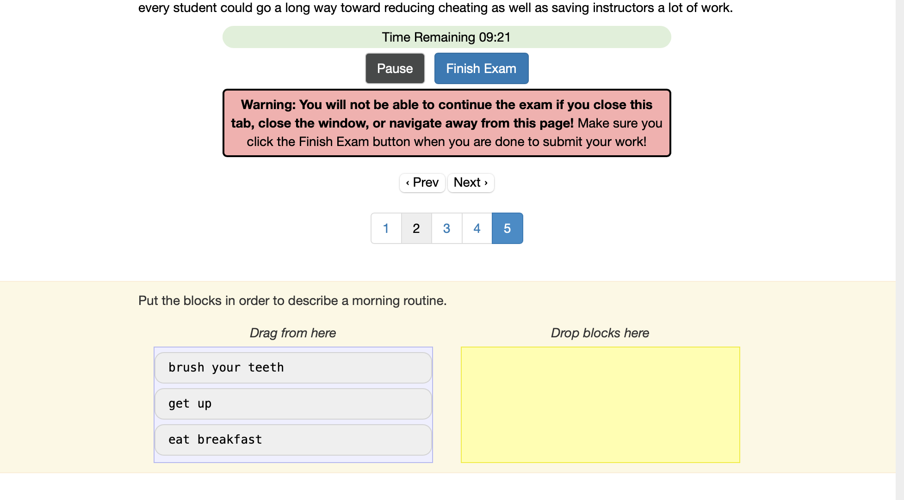
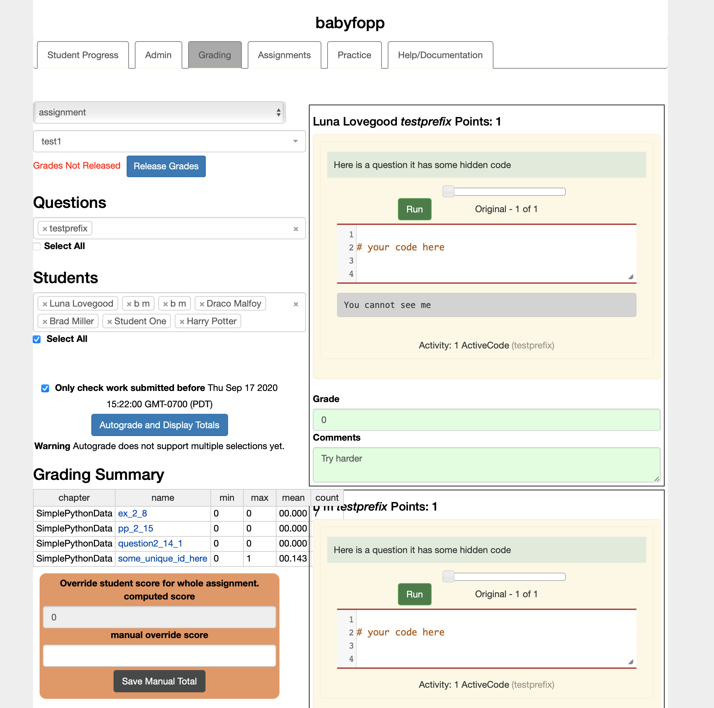
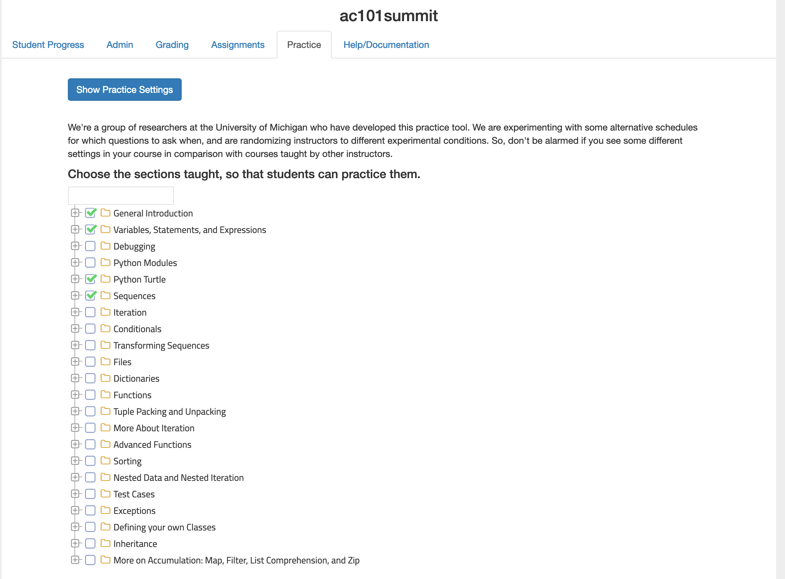

Runestone supports two different kinds of assignments. Reading Assignments and Problem Sets. Understanding the difference between these two kinds of assignments is very important so lets discuss each before moving on to creating assignments.
Reading Assignments.
In Runestone, a reading assignment is by design a formative exercise, low stakes activities to encourage your students to prepare and help them learn. They are not meant to evaluate their progress. As such points are based on the students interaction with the textbook regardless of correctness. Points are assigned based on the number of interactive activities on each page. One activity is simply opening the page. Other activities are based on answering questions or running programs or trying out visualizations that are in on each page. The grading is set up to be all or nothing for each page. If a student interacts with roughly 80% of the activities on the page they will get full credit. If they do not then they get zero points. You can change that threshold to be whatever you want when you are setting up the assignment. It is worth repeating that they get credit for interacting with each thing not for getting it right.
When you create a reading assignment it will appear on the Assignments page, and each page of the reading assignment will have a link to the next page in the assignment. This allows you to encourage your students to read the pages in the order you choose rather than the order they appear in the book.
Problem Sets.
In Runestone a problem set is a group of exercises that are graded for correctness. These can be programming problems, fill in the blank questions, multiple choice or any other gradeable activity. The problems may come from anywhere.
The body of the text
From exercises at the end of the chapter
Problems that you create yourself
Problems from a question bank or from another book
When you create a problem set the problems appear on the assignment page and the student can either work on them there or in the context of the book. To the Runestone system it does not matter where they work on the problem, just that they do work on the problem.
Remark6.1.1.Overloading Assignments.
Besides regular problem sets, a problem set can also be used to create two other student experiences.
Because the Runestone Server and the textbooks are so tightly coupled, the primary job of the server is to capture the work your students do. As your students interact with the book, the book and the server work together to capture the clicks, the answers to questions, the code your students write, etc. All of this is captured regardless of whether the activities are part of an assignment. When you make an assignment that is a layer on top of all of the data collection that simply tells the software what actions to group together when you want to assign a grade.
The separation of data collection from assignments can be a bit confusing at first. It has important implications that you should understand.
If you use the same question in multiple assignments the student only has to do the work once.
If you delete an assignment, your students do not lose any work.
There is no need for your students to “submit” an assignment. When it comes time to grade the software simply uses the data collected for each of the questions in the assignment.
Assignments and LTI.
If you have LTI configured (Section 4.3) Then your students will see a message on the assignment page that says that Assignments can only be accessed through the LMS. This is so grades can be properly passed back to the LMS.
If you decide you don’t want to use LTI you can remove that message and display the student assignments as usual by deleting the LTI keys you created when you set up LTI.
Assignment Status.
The choose assignment page shows the status of the assignment. Students are encouraged to use this to keep themselves organized. They can mark an assignment as in progress or submitted But marking an assignment as submitted is advisory only. They can continue to work on the assignment and Runestone will continue to record what they do. When you grade the assignment you have the flexibility to decide what to grade and how to grade it. You can enforce your deadlines, or relax your deadlines. You can grade your students best response, their last response or their first.
The image below shows the choose assignment page. The student can see that two assignments have been graded and one assignment is "in progress." This makes it easier for students to know where they are it with each homework assignment, but to repeat has no actual bearing on grading.
While Runestone is not (yet) smart enough to automatically mark a students assignment in progress, the student can set toggle through the status values by clicking the button at the bottom of the assignment page.

The values for the status will toggle through the following options:
Not Started
In Progress
Complete
Section6.2Create an Assignment
Subsection6.2.1Introduction
To create an assignment, whether graded or ungraded, start by going to the Assignments tab on the instructor interface. Click on the Add button to start creating a new assignment. On the popup that appears you will notice that you can also copy an old assignment as a starting point.

Figure6.2.1.Figure 1: Click on the Add button to create a new assignment
Provide a name for the assignment.

Figure6.2.2.Figure 2: Enter a unique name for the assignment
Add a description and check the other options.
Click on “Save” to save the assignment. It will show an alert as shown below. Click on “Ok”.
Warning6.2.3.Make it Visible.
Please take note of the visible to students check box. If you forget to check this box then the assignment will not show up in the list that your students (or you) can see on the assignment page.
Figure6.2.4.Figure 4: The save alert box.
There are two primary kinds of assignments. Reading Assignments and Problems Sets. Reading assignments allow you to select whole chapters or parts of chapters for your students to read. You can assign points to the reading assignment by tracking the number of activities they attempt in each subchapter. Problem sets are mainly for you to select short programming problems for the students to solve, but could also include short answer, multiple choice, etc. Or even problems that you write yourself. More on that later.
In either case the primary way you will add questions is through the tree picker interface. This interface is accessed by expanding either the Readings or Problems accordion and allows you to drill down from chapter to section to individual problems. There are several icons associated with problems to help you know what you are looking at.
The 📘 icon indicates that a particular problem was written by the author.
The 🏫 icon indicates that a problem was contributed by another instructor.
The ✔️ icon tells you that the problem can be automatically graded.
In any case you can click on a problem to see a preview. If you are previewing a question and it is obviously bad, or incorrect, or just someone experimenting, use the Flag Question button to let us know. We have volunteer editors that help us clear out or correct these bad questions.

Subsection6.2.2Creating a Reading Assignment
Let’s create a reading assignment and add a few sections for our students to read. As you add sections you will see that are shown in a table under the Readings tab.
There are four things you can change for each section:
# required - How many of the components on the page do you students need to do in order to get the points for this section.
How many points for completing this section?
Auto-grade - interaction means that the students have done something
which to grade - first answer, best answer, or last answer
Subsection6.2.3Creating a Problem Assignment
Creating a problem assignment is similar. You will most often use the tree picker, but you can also search for problems or write your own. When selecting a problem if you click on the name of the problem the interface will display the problem on the page remind you what it is about.
Problems have a different set of configurations
Points - how many points for this question
Auto-grade – options here are % correct, All or nothing, Interaction, or manual.
which to grade – Best Answer, first answer or last answer
Problems with the book icon next to them are written by the author. Problems with the schoolhouse are contributed by the community. If a problem has a checkmark next to it then you know it can be automatically graded.
Section6.3Copying Assignments
Subsection6.3.1Copying from your previous courses
You may have multiple sections where you want to share assignments, or you may simply want to copy your assignments from the last time you taught a course to your current course. You can do this.
Figure6.3.1.Figure 1: Copying an assignment.
The copy assignment tab lets you select any of your old or current courses that use the same book.
Figure6.3.2.Figure 2: Select the Course
Once the course is selected you can copy one or all of the assignments to your course. If you do this multiple times courses with the same name will be ignored on the second copy. This makes it a little easier if you just want to keep one course in sync with another so you don’t have to remember and pick and choose.
Figure6.3.3.Figure 3: Select one or all assignments to copy.
The system will add the assignments to your current course and make its best guess to adjust the due date, based on the number of days from the beginning of each course. This is going to get you in the ballpark but you will probably have to manually adjust it due to differences in the calendar from year to year.
Subsection6.3.2Copying from a different Instructor
Help, this is my first time teaching this class and I want to copy assignments from another instructor. This is very possible if the instructor is still available. You simply need to enroll in their course and have them make you a TA. Then you will be able to copy the assignments from their course to yours.
If the previous instructor is not available then we can still probably make it happen, but you are going to have to go out of your way to prove that your request is legit. Sorry, we cannot just take your word for it over email. A link to your faculty page, that verifies your email as a legitimate instructor at the same institution of the instructor of the course you want to copy. We would love to just trust everyone, but data privacy laws are strict and we have to to treat data privacy very carefully. Thanks for understanding.
Subsection6.3.3Copying a Course Pack from the Author
Some authors have provided a pre-made set of assignments. You can copy these from the "base course" after you have created your course. The "base course" is the code for the book that you chose when you created your own course. Not all authors have done this yet, so your results will vary.
Section6.4Exams and Quizzes in Runestone
Subsection6.4.1Introduction
Figure6.4.1.Figure 1: Creating an exam from an assignment
If you look at Figure 1 on this page again, you will see there is a checkbox labelled “Show as Timed Assessment” This turns a problem assignment into an exam. There are severall things to note about this. First is the appearance to the students, when the students first see a timed exam it looks like this:
Figure6.4.2.
They cannot see any of the questions until they click the start button. When the start button is clicked the timer (if selected) is also started.
During an exam the students see just one question at a time. They can navigate the questions by number or they can use the prev/next buttons to go from question to question.
When the student navigates to the new question the question they were on is evaluated and the results are sent to the server. Questions that a student has attempted are marked as grey on the numbered interface so students know which questions they have answered.
During an exam the student will not see any feedback on whether they answered the questions right or wrong. Once the exam is completed they will see that feedback unless you have checked the don’t show feedback checkbox.
It is important to remind students that if they close the tab or their browser or navigate away from the page or even try to refresh the page, the exam is over and they will not be able to answer any more questions. Once they click the finish exam button they are done. As an instructor you can reset a students exam from the instructors page, but they will be forced to start over.
When a student submits their exam with the finish exam button or when the exam is automatically submitted due to time expiring, the autograder is run on the server and a score is recorded. If all your questions are autogradable you’re done! If not you can use the grading interface to manually grade any questions.

Figure6.4.3.
Subsection6.4.2Resetting an Exam
The instructor interface allows you to reset an exam for any student.
Figure6.4.4.
You just select the student and the assignment name and then press the red button.
Section6.5Grading
Subsection6.5.1Introduction
To grade student performance, go back to the instructor’s interface and click on the grading tab. You’ll see something like this.
Typically, you will select an assignment from the first dropdown. This will show you summary of the elements that are automatically graded. The other option is Chapter and you can use this to drill in on a chapter and look at a students work on any problem in the textbook regardless of whether it was part of an assignment.
From here you can also select a question or questions as well as a student or students to manually grade a problem. You can also use this to view a students answer to an automatically graded problem if they have a question about their score.

You will see the last version of code that the student ran prior to the assignment deadline. Click run to execute it. Drag the little scrubber across the timeline next to the Run button to see other versions of the code that the student ran.
You can assign a number grade (number of points) and, optionally, leave a comment. As you tab out of the grade box you will see it turn green to indicate that the grade has been updated in the database. Similarly if you leave a comment it will automatically update the database with the comment for the student.
If you prefer to work on one question at a time there is a save and next button that will automatically move on the next item to grade.
Subsection6.5.2Autograde
Some questions have been configured for auto-grading, in particular coding problems with unit tests and some multiple choice problems. If you click on the Autograde button on the left side, the autograder will run. It will pop up an alert box to give you a diagnostic about how many question-student pairs were autograded.
Some things to note about the autograder:
If a question is selected, the autograder will run only for that question.
If a student is also selected, the autograder will run for only that question-student combination.
To run the autograder for all the questions and students for a particular assignment, refresh the page, select the assignment, and click the autograde button before selecting a question or student.
You can manually override the grade assigned by the autograder using the grading form on the right side. Be sure to change the comment as well.
If you rerun the autograder, it will not run on any student-question pair where you have changed the comment.
Subsection6.5.3Calculate Totals
Once you have graded all the questions on an assignment, click the Caclulate Totals button to compute the total scores for the whole assignment, or to recalculate them after updating a grade. Again, an alert box will pop up to provide diagnostics about the min and max scores that were calculated.
Subsection6.5.4Release Grades
When you are satisfied that the grade totals have been calculated correctly, click on the Release Grades button at the bottom left. This makes them visible to students. If you make any subsequent changes to grades, you will need to click Calculate Totals again, but you will not need to click on Release Grades again: once released, they stay released.
Subsection6.5.5How a Student Sees Grades and Comments
When viewing an assignment, a student can click on the “Show Feedback” button to see a score and any instructor comments.
In addition the user menu allows the student to see a summary of their progress.
Section6.6The Practice Interface
How often have you had a student ask you how they could get more practice? One theory that supports this is “spaced repetition” That is, a method to have students go back and answer existing questions but a couple of weeks after the material was brand new. Its harder, because its now out of the immediate context of the reading they just did, but this type of review helps solidify a student’s understanding of the concept.
There is a paper about this in the ACM Digital Library from the 2019 proceedings. Speed and Studying: Gendered Pathways to Success, Iman Yeckehzaare and Paul Resnick.
This feature is available in most books on Runestone Academy. The exercises need to be tagged and in some cases categorized. Other books will follow as we do the work to update the source.
The first thing you will need to do is configure practice for your course. Most of the options on the configuration are pretty self explanatory, but here are a few notes.
If you choose to assign points for practice they will show up in a special column in the gradebook.labelled "Practice"
Do not forget to come back to the practice interface after you have covered a topic so that you can enable practice questions for that topic.
Figure6.6.1.Set up the practice feature for your course.
Once you have enabled the practice feature for the course, you enable the sections you want practice questions to come from.

Figure6.6.2.
The students can access the practice tool from the 👤 menu, The practice practice looks like this: